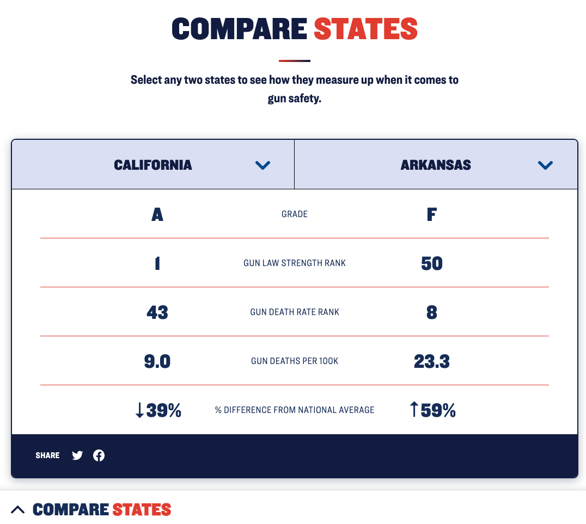
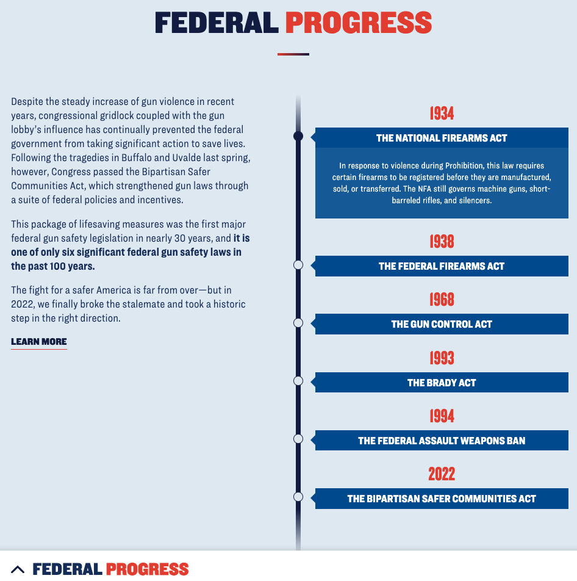
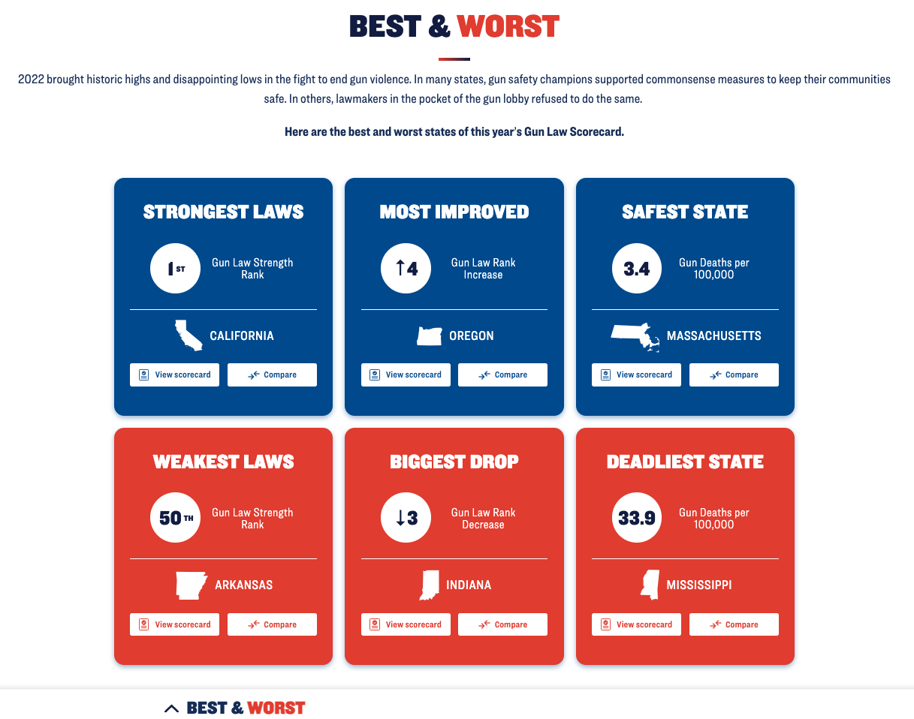
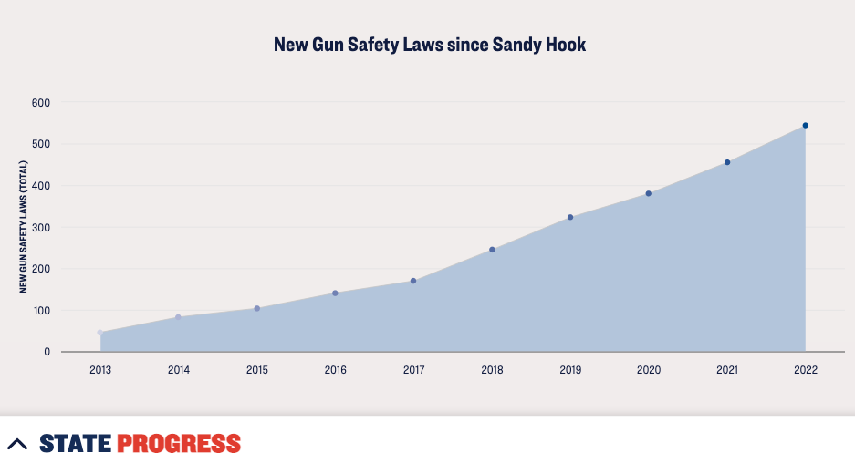
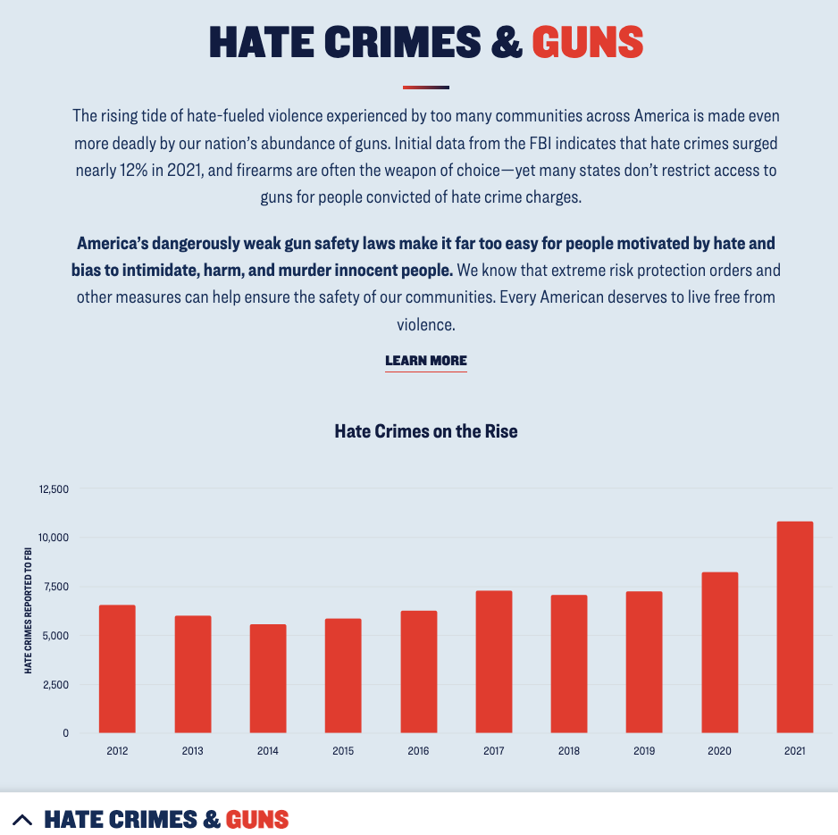

Gun Law Scorecard (Article Review)
In this post, I’ll be sharing my review of the data visuals and analysis presented in the article Gun Law Scorecard.
Introduction
Gun Law Scorecard grades each U.S. state on gun safety, highlighting the correlation between gun regulation and lower gun-related deaths. The article features 9 interactive data visuals that tell the story of gun laws and deaths in the country. In this review, I will describe each data visual’s features and provide three bullet points summarizing my thoughts.
1. Grading the States (Map)

The title of each section in this article corresponds to the content depicted in the visual presented within in.
The visual explanation consists of four sentences. The first two describe the grading system used in the article.The third presents the thesis that “strong gun laws save lives”. The last sentence explains how the visual works.
The interactive features of the visual include: (1) a drop-down menu located beside the “GRADE” title that allows users to switch between “GUN LAW STRENGTH,” “GUN DEATH RANK,” and “GUN DEATH RATE”; (2) the ability to hover over each state with a mouse, revealing its grade, strength, or rank; and (3) pop-up windows that provide a more detailed analysis of each state.
2. Grading the States (Table)
Gun Law Strength (Ranked) is the left most column. This follows our intuition to have a ranked row as the leftmost column of the table. It is also the more optimistic choice between Law Strength and Death Rate.
Pop-out darkens the rest of the screen, and gives state specific information of what has changed this year and how each state can improve.
- The table shows all 50 states (no option to show less), so it is helpful to be able to switch back to the map to keep scrolling.
3. Gun Laws Vs. Gun Deaths
Title of the plot tells the viewer the conclusion of the the visual which is, As Gun Laws Weaken, Gun Deaths Rise.
I’m curious about some of the outlier states such as New Mexico, and New Hampshire.
It would be interesting to include more data and run a more in depth linear analysis.
4. Compare States

Starting comparison is the top ranking state California, and the bottom ranking state Arkansas.
The interactive table above was helpful in finding other comparisons such as Massachusetts and Mississippi.
This visual and the table are the only two with the option to share to twitter or facebook on the footer of the visual.
5. Federal Process

Bold text in left tells what the visual is about which is that in the past 100 years there has only been 6 national gun laws passed. The idea of more national regulation is a theme throughout this article.
Both the word “Progress” and the years are written in red. Showing that progress happened these years.
Simple, effective, and informative. By clicking on the different hears the reader can learn a little bit about the law. There is also more information about each law when clicking on the “Learn More” button under the text on the left.
6. Best & Worst

Good visual to compare the good and the bad. Each has two interactive buttons. One to show a states entire score card, and the other to input that state into the comparison table.
Metrics for plaques were Strongest/Weakest Laws, Most Improved/ Biggest Drop, and Safest/Deadliest State.
Each plaque includes an image of a state, but the image (unlike the other buttons below the line) does not pop the user up to the interactive map. Meaning it is purely decorative. Something to consider.
7. State Progress (Heat Map Chart)
Interesting choice of visual, but helpful in giving a broad understanding of what the state laws related to guns look like.
When hovering over the category name the rectangle changes from blue to red, and a dark blue box pops up to tell the reader the exact number of laws.
Another visual I may have considered using for this is a horizontal bar chart. This visual style would make it easier for the reader to notice that both “Access to Guns” and “Other Gun Safety Laws” have 14 new laws in 2022. Similarly the “Domestic Violence” and “Gun Dealer Regulations” both have 6 new gun laws in 2022.
8. State Progress (Dot Plot)

This visual works well with the one above it, because after reading about the new laws in 2022 one would be curious what the progression over time has been.
Interactivity is fun, but I would have preferred the amount actively visible above the plot since there are only 10 points.
I am curious if there exists data that shows which state gun laws may have been created because of a mass shooting event.
9. Hate Crimes & Guns (Bar Graph)

Important visual to add that is related to the main thesis of the article.
Since the hate crimes seem to be on the rise, it may be interesting to view the number of hate crimes by state, or see if there is any relevence to included that data into the scorecard.
It may be interesting to see this same visual, but broken down by hate crime, or comparing other categories of gun violence such as suicide, domestic violence, and police violence.
Final Thoughts
Here are some of my main take away from this analysis:
A consistent color scheme of Red, White, and Blue was present across the article, and data visuals. Red is more prominently used with guns, gun deaths, worst states, and as a highlight, accent, or call to action color. The blue seems more neutral or positive. Something to consider when deciding on color palletes for visuals.
A “new” metric was created (the scorecard) to tell a consistent story through multiple data visuals.
Interactive visuals are a great way to engage the reader to investigate their own state, and familiarize themselves with other states.
Other data that might be interesting to view, gun sales, suicide by gun, mass shootings, state regulations, and gun related hate crimes.